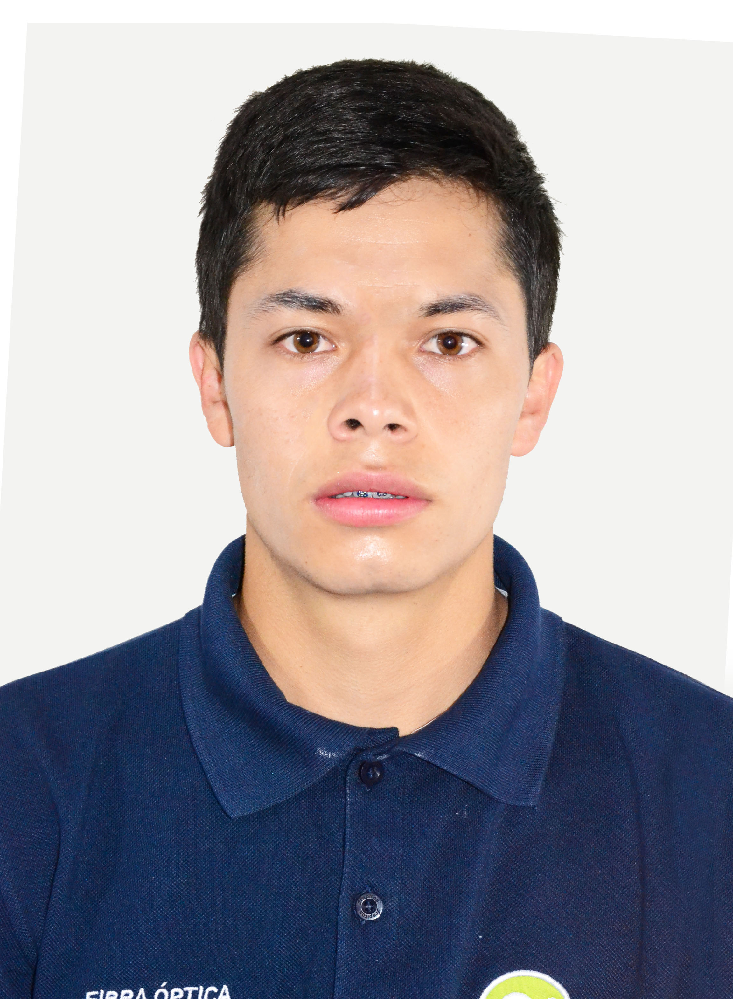

Ingeniero en Telecomunicaciones | Tecnólogo en Electrónica
Las fotos avanzan rápido. Pasa el mouse para detener.
Mantenimiento preventivo, formateo, instalación de programas, reparación de hardware y recuperación de datos.
Cableado estructurado, configuración de Routers/WiFi, puntos de acceso, fibra óptica y cámaras de seguridad.
Programación de PLCs Siemens, Gateways industriales, electricidad de potencia. Instalaciones residenciales y domótica.
Redacción y asesoría de Tesis, tutorías en ingeniería, corrección de Normas APA y control de Antiplagio.
Ingeniero en Telecomunicaciones y Tecnólogo en Electrónica con una trayectoria consolidada en entornos técnicos y operativos de alta exigencia. Especializado en la digitalización de procesos industriales, gestión de infraestructura de red y sistemas de automatización avanzada. Me distingo por mi capacidad de resolución de problemas técnicos complejos y un enfoque constante en la eficiencia y calidad de resultados.
Liderazgo técnico en la instalación de sistemas eléctricos industriales y mantenimiento de tableros de control. Implementación de sistemas fotovoltaicos y redes inalámbricas de largo alcance. Despliegue de sistemas de videovigilancia IP (CCTV) a gran escala en embarcaciones y sectores industriales.
Digitalización de datos industriales de las líneas de producción de la empresa ILE. Implementación de sistemas para el cálculo y visualización de KPIs y OEE (Eficiencia General de los Equipos) para optimización de procesos.
Diseño y programación de un sistema de clasificación de objetos por colores mediante brazo robótico. Integración de sensores electrónicos, microcontroladores (Arduino/C) y lógica de control.
Experiencia operativa en empresas como Necusoft, Vilcanet y Etelnetsol. Instalación, mantenimiento y reparación de infraestructura de telecomunicaciones, tendido de fibra óptica y configuración de redes en planta externa.